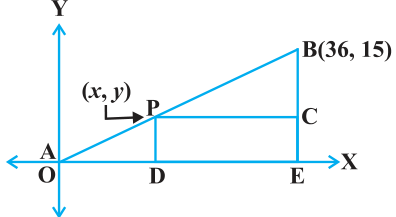
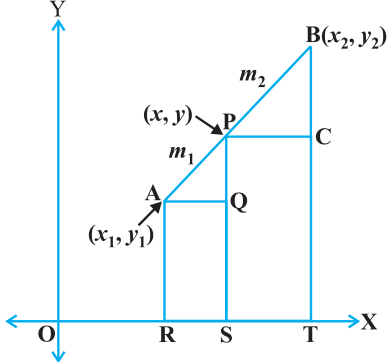
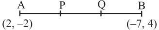

Section Formula
Let us recall the situation in Section 7.2. Suppose a telephone company wants to position a relay tower at P between A and B is such a way that the distance of the tower from B is twice its distance from A. If P lies on AB, it will divide AB in the ratio 1 : 2 (see Fig. 7.9). If we take A as the origin O, and 1 km as one unit on both the axis, the coordinates of B will be (36, 15). In order to know the position of the tower, we must know the coordinates of P. How do we find these coordinates?

Let the coordinates of P be (x, y). Draw perpendiculars from P and B to the x-axis, meeting it in D and E, respectively. Draw PC perpendicular to BE. Then, by the AA similarity criterion, studied in Chapter 6, \(\triangle POD\) and \(\triangle BPC\) are similar.
Therefore, \(\dfrac{OD}{PC} = \dfrac{OP}{PB} = \dfrac{1}{2}\), and \(\dfrac{PD}{BC} = \dfrac{OP}{PB} = \dfrac{1}{2}\)
So, \(\dfrac{x}{36 - x} = \dfrac{1}{2}\) and \(\dfrac{y}{15 - y} = \dfrac{1}{2}\).
These equations give \(x = 12\) and \(y = 5\).
You can check that P(12, 5) meets the condition that \(OP : PB = 1 : 2\).
Now let us use the understanding that you may have developed through this example to obtain the general formula.
Consider any two points \(A(x_{1}, y_{1})\) and \(B(x_{2}, y_{2})\) and assume that P (x, y) divides AB internally in the ratio \(m_{1} : m_{2}\), i.e., \(\dfrac{PA}{PB} = \dfrac{m_{1}}{m_{2}}\) (see Fig. 7.10).

Draw AR, PS and BT perpendicular to the x-axis. Draw AQ and PC parallel to the x-axis. Then, by the AA similarity criterion,
\(\triangle PAQ \sim \triangle BPC\)
Therefore, \(\dfrac{PA}{BP} = \dfrac{AQ}{PC} = \dfrac{PQ}{BC} \qquad (1)\)
Now, \(AQ = RS = OS - OR = x - x_{1}\)
\(PC = ST = OT - OS = x_{2} - x\)
\(PQ = PS - QS = PS - AR = y - y_{1}\)
\(BC = BT - CT = BT - PS = y_{2} - y\)
Substituting these values in (1), we get
\(\dfrac{m_{1}}{m_{2}} = \dfrac{x - x_{1}}{x_{2} - x} = \dfrac{y - y_{1}}{y_{2} - y}\)
Taking \(\dfrac{m_{1}}{m_{2}} = \dfrac{x - x_{1}}{x_{2} - x}\), we get \(x = \dfrac{m_{1}x_{2} + m_{2}x_{1}}{m_{1} + m_{2}}\)
Similarly, taking \(\dfrac{m_{1}}{m_{2}} = \dfrac{y - y_{1}}{y_{2} - y}\), we get \(y = \dfrac{m_{1}y_{2} + m_{2}y_{1}}{m_{1} + m_{2}}\)
So, the coordinates of the point P(x, y) which divides the line segment joining the points \(A(x_{1}, y_{1})\) and \(B(x_{2}, y_{2})\), internally, in the ratio \(m_{1} : m_{2}\) are
\(\left(\dfrac{m_{1}x_{2} + m_{2}x_{1}}{m_{1} + m_{2}},\ \dfrac{m_{1}y_{2} + m_{2}y_{1}}{m_{1} + m_{2}}\right) \qquad (2)\)
This is known as the section formula.
This can also be derived by drawing perpendiculars from A, P and B on the y-axis and proceeding as above.
If the ratio in which P divides AB is k : 1, then the coordinates of the point P will be
\(\left(\dfrac{kx_{2} + x_{1}}{k + 1},\ \dfrac{ky_{2} + y_{1}}{k + 1}\right)\).
Special Case : The mid-point of a line segment divides the line segment in the ratio 1 : 1. Therefore, the coordinates of the mid-point P of the join of the points \(A(x_{1}, y_{1})\) and \(B(x_{2}, y_{2})\) is
\(\left(\dfrac{1 \cdot x_{1} + 1 \cdot x_{2}}{1 + 1},\ \dfrac{1 \cdot y_{1} + 1 \cdot y_{2}}{1 + 1}\right) = \left(\dfrac{x_{1} + x_{2}}{2},\ \dfrac{y_{1} + y_{2}}{2}\right)\).
Let us solve a few examples based on the section formula.
Example 6 :
Find the coordinates of the point which divides the line segment joining the points (4, – 3) and (8, 5) in the ratio 3 : 1 internally.
Solution :
Let P(x, y) be the required point. Using the section formula, we get
\(x = \dfrac{3(8) + 1(4)}{3 + 1} = 7,\quad y = \dfrac{3(5) + 1(-3)}{3 + 1} = 3\)
Therefore, (7, 3) is the required point.
Example 7 :
In what ratio does the point (– 4, 6) divide the line segment joining the points A(– 6, 10) and B(3, – 8)?
Solution :
Let (– 4, 6) divide AB internally in the ratio \(m_{1} : m_{2}\). Using the section formula, we get
\((-4, 6) = \left(\dfrac{3m_{1} - 6m_{2}}{m_{1} + m_{2}},\ \dfrac{-8m_{1} + 10m_{2}}{m_{1} + m_{2}}\right) \qquad (1)\)
Recall that if \((x, y) = (a, b)\) then \(x = a\) and \(y = b\).
So, \(-4 = \dfrac{3m_{1} - 6m_{2}}{m_{1} + m_{2}}\) and \(6 = \dfrac{-8m_{1} + 10m_{2}}{m_{1} + m_{2}}\)
Now, \(-4 = \dfrac{3m_{1} - 6m_{2}}{m_{1} + m_{2}}\) gives us
\(-4m_{1} - 4m_{2} = 3m_{1} - 6m_{2}\)
i.e., \(7m_{1} = 2m_{2}\)
i.e., \(m_{1} : m_{2} = 2 : 7\)
You should verify that the ratio satisfies the y-coordinate also.
Now, \(\dfrac{-8m_{1} + 10m_{2}}{m_{1} + m_{2}} = \dfrac{-8\dfrac{m_{1}}{m_{2}} + 10}{\dfrac{m_{1}}{m_{2}} + 1}\) (Dividing throughout by \(m_{2}\))
\(= \dfrac{-8 \times \dfrac{2}{7} + 10}{\dfrac{2}{7} + 1} = 6\)
Therefore, the point (– 4, 6) divides the line segment joining the points A(– 6, 10) and B(3, – 8) in the ratio 2 : 7.
Alternatively : The ratio \(m_{1} : m_{2}\) can also be written as \(\dfrac{m_{1}}{m_{2}} : 1\), or k : 1. Let (– 4, 6) divide AB internally in the ratio k : 1. Using the section formula, we get
\((-4, 6) = \left(\dfrac{3k - 6}{k + 1},\ \dfrac{-8k + 10}{k + 1}\right) \qquad (2)\)
So, \(-4 = \dfrac{3k - 6}{k + 1}\)
i.e., \(-4k - 4 = 3k - 6\)
i.e., \(7k = 2\)
i.e., \(k : 1 = 2 : 7\)
You can check for the y-coordinate also.
So, the point (– 4, 6) divides the line segment joining the points A(– 6, 10) and B(3, – 8) in the ratio 2 : 7.
Note : You can also find this ratio by calculating the distances PA and PB and taking their ratios provided you know that A, P and B are collinear.
Example 8 :
Find the coordinates of the points of trisection (i.e., points dividing in three equal parts) of the line segment joining the points A(2, – 2) and B(– 7, 4).
Solution :
Let P and Q be the points of trisection of AB i.e., \(AP = PQ = QB\) (see Fig. 7.11).

Therefore, P divides AB internally in the ratio 1 : 2. Therefore, the coordinates of P, by applying the section formula, are
\(\left(\dfrac{1(-7) + 2(2)}{1 + 2},\ \dfrac{1(4) + 2(-2)}{1 + 2}\right)\), i.e., \((-1, 0)\)
Now, Q also divides AB internally in the ratio 2 : 1. So, the coordinates of Q are
\(\left(\dfrac{2(-7) + 1(2)}{2 + 1},\ \dfrac{2(4) + 1(-2)}{2 + 1}\right)\), i.e., \((-4, 2)\)
Therefore, the coordinates of the points of trisection of the line segment joining A and B are (–1, 0) and (– 4, 2).
Note : We could also have obtained Q by noting that it is the mid-point of PB. So, we could have obtained its coordinates using the mid-point formula.
Example 9 :
Find the ratio in which the y-axis divides the line segment joining the points (5, – 6) and (–1, – 4). Also find the point of intersection.
Solution :
Let the ratio be k : 1. Then by the section formula, the coordinates of the point which divides AB in the ratio k : 1 are \(\left(\dfrac{-k + 5}{k + 1},\ \dfrac{-4k - 6}{k + 1}\right)\).
This point lies on the y-axis, and we know that on the y-axis the abscissa is 0.
Therefore, \(\dfrac{-k + 5}{k + 1} = 0\)
So, \(k = 5\)
That is, the ratio is 5 : 1. Putting the value of \(k = 5\), we get the point of intersection as \(\left(0, \dfrac{-13}{3}\right)\).
Example 10 :
If the points A(6, 1), B(8, 2), C(9, 4) and D(p, 3) are the vertices of a parallelogram, taken in order, find the value of p.
Solution :
We know that diagonals of a parallelogram bisect each other.
So, the coordinates of the mid-point of AC = coordinates of the mid-point of BD
i.e., \(\left(\dfrac{6 + 9}{2},\ \dfrac{1 + 4}{2}\right) = \left(\dfrac{8 + p}{2},\ \dfrac{2 + 3}{2}\right)\)
i.e., \(\left(\dfrac{15}{2},\ \dfrac{5}{2}\right) = \left(\dfrac{8 + p}{2},\ \dfrac{5}{2}\right)\)
so, \(\dfrac{15}{2} = \dfrac{8 + p}{2}\)
i.e., \(p = 7\)